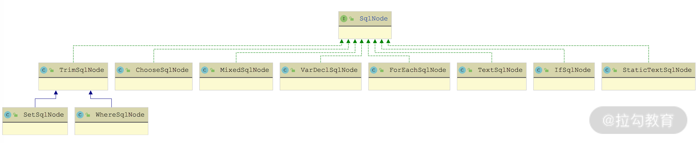

- 00 开篇词 领略 MyBatis 设计思维，突破持久化技术瓶颈.md.html
- 01 常见持久层框架赏析，到底是什么让你选择 MyBatis？.md.html
- 02 订单系统持久层示例分析，20 分钟带你快速上手 MyBatis.md.html
- 03 MyBatis 源码环境搭建及整体架构解析.md.html
- 04 MyBatis 反射工具箱：带你领略不一样的反射设计思路.md.html
- 05 数据库类型体系与 Java 类型体系之间的“爱恨情仇”.md.html
- 06 日志框架千千万，MyBatis 都能兼容的秘密是什么？.md.html
- 07 深入数据源和事务，把握持久化框架的两个关键命脉.md.html
- 08 Mapper 文件与 Java 接口的优雅映射之道.md.html
- 09 基于 MyBatis 缓存分析装饰器模式的最佳实践.md.html
- 10 鸟瞰 MyBatis 初始化，把握 MyBatis 启动流程脉络（上）.md.html
- 11 鸟瞰 MyBatis 初始化，把握 MyBatis 启动流程脉络（下）.md.html
- 12 深入分析动态 SQL 语句解析全流程（上）.md.html
- 13 深入分析动态 SQL 语句解析全流程（下）.md.html
- 14 探究 MyBatis 结果集映射机制背后的秘密（上）.md.html
- 15 探究 MyBatis 结果集映射机制背后的秘密（下）.md.html
- 16 StatementHandler：参数绑定、SQL 执行和结果映射的奠基者.md.html
- 17 Executor 才是执行 SQL 语句的幕后推手（上）.md.html
- 18 Executor 才是执行 SQL 语句的幕后推手（下）.md.html
- 19 深入 MyBatis 内核与业务逻辑的桥梁——接口层.md.html
- 20 插件体系让 MyBatis 世界更加精彩.md.html
- 21 深挖 MyBatis 与 Spring 集成底层原理.md.html
- 22 基于 MyBatis 的衍生框架一览.md.html
- 23 结束语 会使用只能默默“搬砖”，懂原理才能快速晋升.md.html
- 捐赠
12 深入分析动态 SQL 语句解析全流程（上）
在前面两讲中，我们详细介绍了 mybatis-config.xml 全局配置文件以及 Mapper.xml 映射文件的解析流程，MyBatis 会将 Mapper 映射文件中定义的 SQL 语句解析成 SqlSource 对象，其中的动态标签、SQL 语句文本等，会解析成对应类型的 SqlNode 对象。
在开始介绍 SqlSource 接口、SqlNode 接口等核心接口的相关内容之前，我们需要先来了解一下动态 SQL 中使用到的基础知识和基础组件。
OGNL 表达式语言
OGNL 表达式语言是一款成熟的、面向对象的表达式语言。在动态 SQL 语句中使用到了 OGNL 表达式读写 JavaBean 属性值、执行 JavaBean 方法这两个基础功能。
OGNL 表达式是相对完备的一门表达式语言，我们可以通过“对象变量名称.方法名称（或属性名称）”调用一个 JavaBean 对象的方法（或访问其属性），还可以通过“@[类的完全限定名]@[静态方法（或静态字段）]”调用一个 Java 类的静态方法（或访问静态字段）。OGNL 表达式还支持很多更复杂、更强大的功能，这里不再一一介绍。
下面我就通过一个示例来帮助你快速了解 OGNL 表达式的基础使用：
public class OGNLDemo {
private static Customer customer;
private static OgnlContext context;
private static Customer createCustomer() {
customer = new Customer();
customer.setId(1);
customer.setName("Test Customer");
customer.setPhone("1234567");
Address address = new Address();
address.setCity("city-001");
address.setId(1);
address.setCountry("country-001");
address.setStreet("street-001");
ArrayList<Address> addresses = new ArrayList<>();
addresses.add(address);
customer.setAddresses(addresses);
return customer;
}
public static void main(String[] args) throws Exception {
customer = createCustomer(); // 创建Customer对象以及Address对象
// 创建OgnlContext上下文对象
context = new OgnlContext(new DefaultClassResolver(),
new DefaultTypeConverter(),
new OgnlMemberAccess());
// 设置root以及address这个key，默认从root开始查找属性或方法
context.setRoot(customer);
context.put("address", customer.getAddresses().get(0));
// Ognl.paraseExpression()方法负责解析OGNL表达式，获取Customer的addresses属性
Object obj = Ognl.getValue(Ognl.parseExpression("addresses"),
context, context.getRoot());
System.out.println(obj);
// 输出是[Address{id=1, street='street-001', city='city-001', country='country-001'}]
// 获取city属性
obj = Ognl.getValue(Ognl.parseExpression("addresses[0].city"),
context, context.getRoot());
System.out.println(obj); // 输出是city-001
// #address表示访问的不是root对象，而是OgnlContext中key为addresses的对象
obj = Ognl.getValue(Ognl.parseExpression("#address.city"), context,
context.getRoot());
System.out.println(obj); // 输出是city-001
// 执行Customer的getName()方法
obj = Ognl.getValue(Ognl.parseExpression("getName()"), context,
context.getRoot());
System.out.println(obj);
// 输出是Test Customer
}
}
MyBatis 为了提高 OGNL 表达式的工作效率，添加了一层 OgnlCache 来缓存表达式编译之后的结果（不是表达式的执行结果），OgnlCache 通过一个 ConcurrentHashMap
DynamicContext 上下文
在 MyBatis 解析一条动态 SQL 语句的时候，可能整个流程非常长，其中涉及多层方法的调用、方法的递归、复杂的循环等，其中产生的中间结果需要有一个地方进行存储，那就是 DynamicContext 上下文对象。
DynamicContext 中有两个核心属性：一个是 sqlBuilder 字段（StringJoiner 类型），用来记录解析之后的 SQL 语句；另一个是 bindings 字段，用来记录上下文中的一些 KV 信息。
DynamicContext 定义了一个 ContextMap 内部类，ContextMap 用来记录运行时用户传入的、用来替换“#{}”占位符的实参。在 DynamicContext 构造方法中，会根据传入的实参类型决定如何创建对应的 ContextMap 对象，核心代码如下：
public DynamicContext(Configuration configuration, Object parameterObject) {
if (parameterObject != null && !(parameterObject instanceof Map)) {
// 对于非Map类型的实参，会创建对应的MetaObject对象，并封装成ContextMap对象
MetaObject metaObject = configuration.newMetaObject(parameterObject);
boolean existsTypeHandler = configuration.getTypeHandlerRegistry().hasTypeHandler(parameterObject.getClass());
bindings = new ContextMap(metaObject, existsTypeHandler);
} else {
// 对于Map类型的实参，这里会创建一个空的ContextMap对象
bindings = new ContextMap(null, false);
}
// 这里实参对应的Key是_parameter
bindings.put(PARAMETER_OBJECT_KEY, parameterObject);
bindings.put(DATABASE_ID_KEY, configuration.getDatabaseId());
}
ContextMap 继承了 HashMap 并覆盖了 get() 方法，在 get() 方法中有一个简单的降级逻辑：
- 首先，尝试按照 Map 的规则查找 Key，如果查找成功直接返回；
- 然后，再尝试检查 parameterObject 这个实参对象是否包含 Key 这个属性，如果包含的话，则直接读取该属性值返回；
- 最后，根据当前是否包含 parameterObject 相应的 TypeHandler 决定是返回整个 parameterObject 对象，还是返回 null。
后面在介绍 <foreach>、<trim> 等标签的处理逻辑中，你可以看到向 DynamicContext.bindings 集合中写入 KV 数据的操作，但是读取这个 ContextMap 的地方主要是在 OGNL 表达式中，也就是在 DynamicContext 中定义了一个静态代码块，指定了 OGNL 表达式读写 ContextMap 集合的逻辑，这部分读取逻辑封装在 ContextAccessor 中。除此之外，你还可以看到 ContextAccessor 中的 getProperty() 方法会将传入的 target 参数（实际上就是 ContextMap）转换为 Map，并先尝试按照 Map 规则进行查找；查找失败之后，会尝试获取“_parameter”对应的 parameterObject 对象，从 parameterObject 中获取指定的 Value 值。
组合模式
组合模式（有时候也被称为“部分-整体”模式）是将同一类型的多个对象组合成一个树形结构。在使用这个树形结构的时候，我们可以像处理一个对象那样进行处理，而不用关心其复杂的树形结构。
组合模式的核心结构如下图所示：

从上图中，我们可以看出组合模式的核心组件有下面三个。
- Component 接口：定义了整个树形结构中每个节点的基础行为。一般情况下会定义两类方法，一类是真正的业务行为，另一类是管理子节点的行为，例如 addChild()、removeChild()、getChildren() 等方法。
- Leaf 类：抽象的是树形结构中的叶子节点。Leaf 类只实现了 Component 接口中的业务方法，而管理子节点的方法是空实现或直接抛出异常。
- Composite 类：抽象了树形结构中的树枝节点（非叶子节点）。Composite 类不仅要实现 Component 接口的业务方法，而且还需要实现子节点管理的相关方法，并在内部维护一个集合类来管理这些子节点。Composite 实现的业务方法一般逻辑比较简单，大都是直接循环调用所有子节点的业务方法。
通过以上对组合模式的介绍，你可以看出组合模式有以下两个优势：
- 由于使用方并不关心自己使用的是树形 Component 结构还是单个 Component 对象，所以可以帮助上层使用方屏蔽复杂的树形结构，将使用方的逻辑与树形结构解耦；
- 如果要在树形结构中添加新的功能，只需要增加树形结构中的节点即可，也就是提供新的 Component 接口实现并添加到树中，这符合“开放-封闭”原则。
SqlNode
在 MyBatis 处理动态 SQL 语句的时候，会将动态 SQL 标签解析为 SqlNode 对象，多个 SqlNode 对象就是通过组合模式组成树形结构供上层使用的。
下面我们就来讲解一下 SqlNode 的相关实现。首先，介绍一下 SqlNode 接口的定义，如下所示：
public interface SqlNode {
// apply()方法会根据用户传入的实参，解析该SqlNode所表示的动态SQL内容并
// 将解析之后的SQL片段追加到DynamicContext.sqlBuilder字段中暂存。
// 当SQL语句中全部的动态SQL片段都解析完成之后，就可以从DynamicContext.sqlBuilder字段中
// 得到一条完整的、可用的SQL语句了
boolean apply(DynamicContext context);
}
MyBatis 为 SqlNode 接口提供了非常多的实现类（如下图），其中很多实现类都对应一个动态 SQL 标签，但是也有 SqlNode 实现扮演了组合模式中 Composite 的角色，例如，MixedSqlNode 实现类。

SqlNode 继承关系图
下面我们就来逐一介绍这每个 SqlNode 实现类的功能和核心实现。
1. StaticTextSqlNode 和 MixedSqlNode
StaticTextSqlNode 用于表示非动态的 SQL 片段，其中维护了一个 text 字段（String 类型），用于记录非动态 SQL 片段的文本内容，其 apply() 方法会直接将 text 字段值追加到 DynamicContext.sqlBuilder 的最末尾。
MixedSqlNode 在整个 SqlNode 树中充当了树枝节点，也就是扮演了组合模式中 Composite 的角色，其中维护了一个 List<SqlNode> 集合用于记录 MixedSqlNode 下所有的子 SqlNode 对象。MixedSqlNode 对于 apply() 方法的实现也相对比较简单，核心逻辑就是遍历 List<SqlNode> 集合中全部的子 SqlNode 对象并调用 apply() 方法，由子 SqlNode 对象完成真正的动态 SQL 处理逻辑。
2. TextSqlNode
TextSqlNode 实现抽象了包含 “${}”占位符的动态 SQL 片段。TextSqlNode 通过一个 text 字段（String 类型）记录了包含“\({}”占位符的 SQL 文本内容，在 apply() 方法实现中会结合用户给定的实参解析“\){}”占位符，核心代码片段如下：
public boolean apply(DynamicContext context) {
// 创建GenericTokenParser解析器，这里指定的占位符的起止符号分别是"${"和"}"
GenericTokenParser parser = createParser(
new BindingTokenParser(context, injectionFilter));
// 将解析之后的SQL片段追加到DynamicContext暂存
context.appendSql(parser.parse(text));
return true;
}
这里使用 GenericTokenParser 识别“${}”占位符，在识别到占位符之后，会通过 BindingTokenParser 将“${}”占位符替换为用户传入的实参。BindingTokenParser 继承了TokenHandler 接口，在其 handleToken() 方法实现中，会根据 DynamicContext.bindings 这个 ContextMap 中的 KV 数据替换 SQL 语句中的“${}”占位符，相关的代码片段如下：
public String handleToken(String content) {
// 获取用户提供的实参数据
Object parameter = context.getBindings().get("_parameter");
if (parameter == null) { // 通过value占位符，也可以查找到parameter对象
context.getBindings().put("value", null);
} else if (SimpleTypeRegistry.isSimpleType(parameter.getClass())) {
context.getBindings().put("value", parameter);
}
// 通过Ognl解析"${}"占位符中的表达式，解析失败的话会返回空字符串
Object value = OgnlCache.getValue(content, context.getBindings());
String srtValue = value == null ? "" : String.valueOf(value);
checkInjection(srtValue); // 对解析后的值进行过滤
return srtValue; // 通过过滤的值才能正常返回
}
3. IfSqlNode
IfSqlNode 实现类对应了动态 SQL 语句中的 <if> 标签中使用可以通过 test 属性指定一个表达式，当表达式成立时，<if> 标签内的 SQL 片段才会出现在完整的 SQL 语句中。
在 IfSqlNode 中，通过 test 字段（String 类型）记录了 <if> 标签中的 test 表达式，通过 contents 字段（SqlNode 类型）维护了 <if> 标签下的子 SqlNode 对象。在 IfSqlNode 的 apply() 方法实现中，会依赖 ExpressionEvaluator 工具类解析 test 表达式，只有 test 表达式为 true，才会调用子 SqlNode 对象（即 contents 字段）的 apply() 方法。需要说明的是：这里使用到的 ExpressionEvaluator 工具类底层也是依赖 OGNL 表达式实现 test 表达式解析的。
4. TrimSqlNode
TrimSqlNode 对应 MyBatis 动态 SQL 语句中的
在使用 <trim> 标签的时候，我们可以指定 prefix 和 suffix 属性添加前缀和后缀，也可以指定 prefixesToOverrides 和 suffixesToOverrides 属性来删除多个前缀和后缀（使用“|”分割不同字符串）。在 TrimSqlNode 中维护了同名的四个字段值，即 prefix 字段、suffix 字段（这两个是 String 类型）以及 prefixesToOverride 字段、suffixesToOverride 字段（这两个是 List<String> 类型）。
下面先来看一下 TrimSqlNode 的 apply() 方法的实现：
public boolean apply(DynamicContext context) {
FilteredDynamicContext filteredDynamicContext = new FilteredDynamicContext(context);
// 首先执行子SqlNode对象的apply()方法完成对应动态SQL片段的解析
boolean result = contents.apply(filteredDynamicContext);
// 使用FilteredDynamicContext.applyAll()方法完成前后缀的处理操作
filteredDynamicContext.applyAll();
return result;
}
从 apply() 方法的实现可以看出，TrimSqlNode 处理前后缀的核心逻辑是在 FilteredDynamicContext 中完成的。FilteredDynamicContext 可以看作是 DynamicContext 的装饰器。除了 DynamicContext 本身临时存储解析结果和参数的功能之外，FilteredDynamicContext 还通过其 applyAll() 方法实现了前后缀的处理，其中会判断 TrimSqlNode 下子 SqlNode 的解析结果的长度，然后执行 applyPrefix() 方法处理前缀，执行 applySuffix() 方法处理后缀。
- applyPrefix() 方法在处理前缀的时候，首先会遍历 prefixesToOverride 集合，从 SQL 片段的头部逐个尝试进行删除，之后在 SQL 片段的头部插入一个空格以及 prefix 字段指定的前缀字符串。
- applySuffix() 方法在处理后缀的时候，首先会遍历 suffixesToOverride 集合，从 SQL 片段的尾部逐个尝试进行删除，之后在 SQL 片段的尾部插入一个空格以及 suffix 字段指定的后缀字符串。
另外，从前面的 SqlNode 继承关系图中还可以看出，WhereSqlNode 和 SetSqlNode 是 TrimSqlNode 的子类。
在 WhereSqlNode 中将 prefix 设置为“WHERE”字符串，prefixesToOverride 集合包含 “OR”“AND”“OR\n”“AND\n”“OR\r”“AND\r” 等字符串，这样就实现了删除 SQL 片段开头多余的 “AND”“OR” 关键字，并添加“WHERE”关键字的效果。
在 SetSqlNode 中将 prefix 设置为“SET”关键字，prefixesToOverride 集合和 suffixesToOverride 集合只包含“，”（逗号）字符串，这样就实现了删除 SQL 片段开头和结尾多余的逗号，并添加“SET”关键字的效果。
总结
这一讲我们重点介绍了 MyBatis 中动态 SQL 语句中涉及的核心内容。
- 首先，说明了动态 SQL 语句中使用的 OGNL 表达式语言，这样你就了解了动态 SQL 语句中占位符的处理逻辑。
- 然后，介绍了 DynamicContext 对象，其中维护了解析动态 SQL 语句上下文信息；随后我还分析了组合模式，因为它是 MyBatis 组合各动态 SQL 节点的设计思想。
- 最后，讲解了 TextSqlNode、IfSqlNode、TrimSqlNode 等多个 SqlNode 节点的实现。
© 2019 - 2023 Liangliang Lee. Powered by gin and hexo-theme-book.